TODOS NUESTROS PRODUCTOS
BEBIDAS SABANERAS
Mazamorra de Maíz
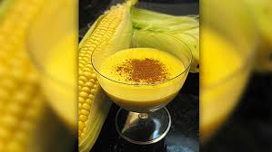
$4000
Bebida espesa y reconfortante hecha con
Jugo de Guanábana
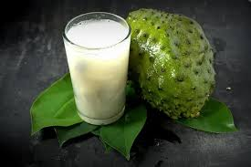
$3000
Delicioso jugo natural preparado a partir
de la fruta guanábana, conocida por su sabor dulce y ácido.
Agua de Panela con Limón
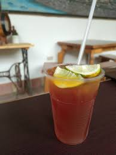
$2000
Bebida caliente preparada con
panela disuelta en agua y un toque de limón, ideal para calentar el cuerpo en días frescos.
CARNES SABANERAS
Asado Negro
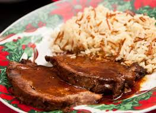 $20000
Carne de res marinada en una mezcla de especias y cocida
lentamente en un caldo dulce de papelón (azúcar de caña sin refinar) hasta que adquiere un color
oscuro y un
sabor agridulce característico.
Carne Mechada
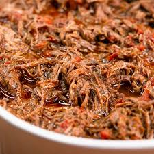
$21000
Carne de res cocida y deshilachada, sazonada con especias y
aliños, que se puede servir como relleno de arepas, tacos o empanadas.
Carne Guisada
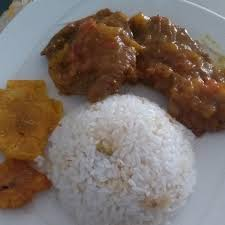
$23000
Trozos de carne de res cocidos a fuego lento en una salsa de
tomate, cebolla, pimiento y especias, hasta que la carne esté tierna y jugosa.
ENSALADAS SABANERAS
Ensalada de Aguacate y Tomate
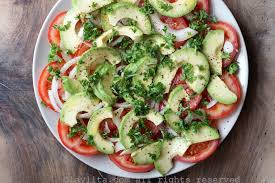
$12000
Ensalada fresca y cremosa preparada con
aguacate, tomate, cebolla, cilantro y aliño de limón y aceite de oliva.
Ensalada de Remolacha con Zanahoria
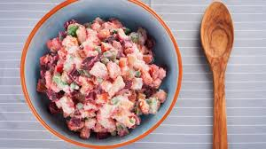
$14000
Ensalada colorida y nutritiva preparada con remolacha y
zanahoria ralladas, cebolla, pimiento, cilantro y aliño de vinagre y aceite.
Ensalada de Chayote
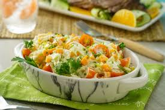
$13000
Ensalada crujiente preparada con chayote rallado,
cebolla, pimiento, cilantro y aliño de limón y aceite de oliva.
SOPAS SABANERAS
Sancocho de Gallina Criolla
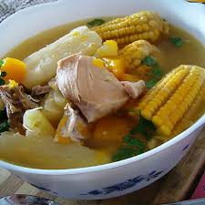
$12000
Sopa espesa y
reconfortante preparada con gallina criolla, variedad de tubérculos, plátano y aliños, cocidos
lentamente
para lograr un caldo sabroso.
Sopa de Mondongo
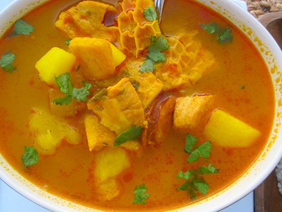
$14000
Sopa preparada con mondongo (tripas de res limpias y
cocidas) y vegetales como papa, zanahoria y cilantro, condimentada con especias y hierbas
aromáticas.
Sopa de Costilla de Res
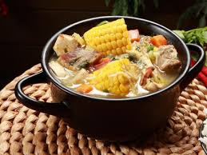
$13000
Sopa reconfortante elaborada con costillas de res,
verduras y hierbas aromáticas, cocidas lentamente para desarrollar un sabor profundo.
Ajiaco Sabanero
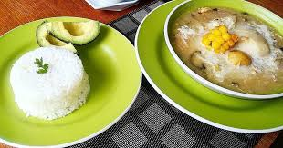
$22000
Sopa espesa y abundante preparada con diferentes
tipos de papas, hierbas aromáticas y carne de res o pollo, característica de la cocina sabanera.
Búscanos en nuestras redes sociales